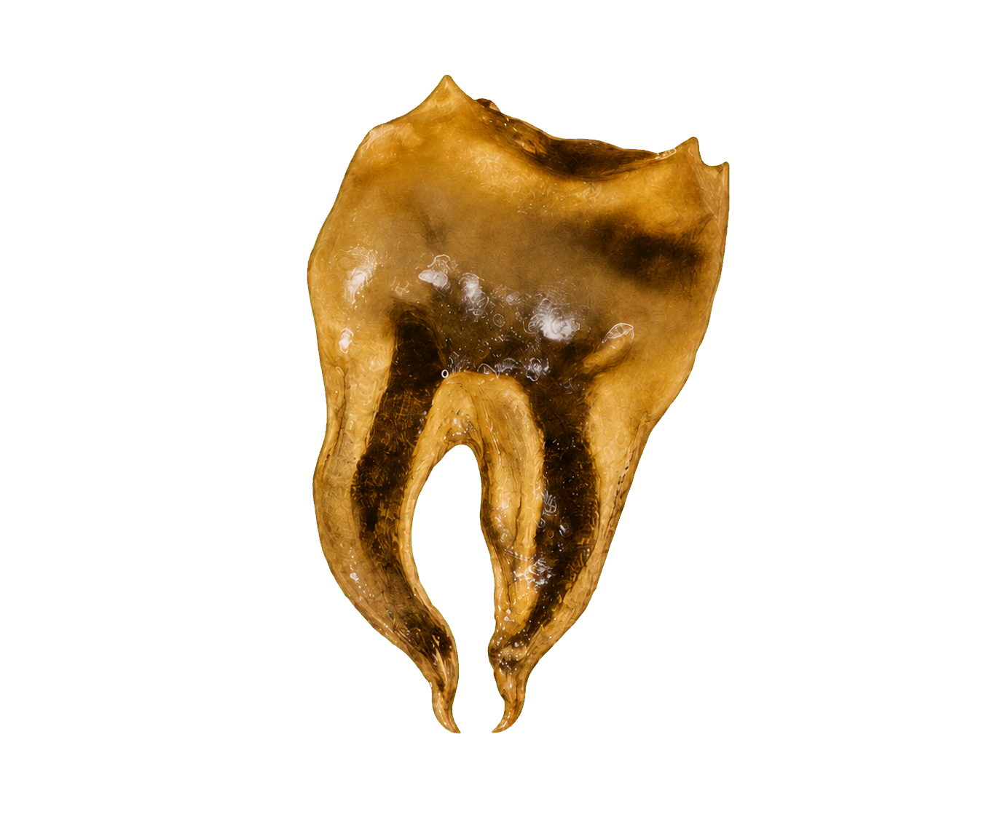
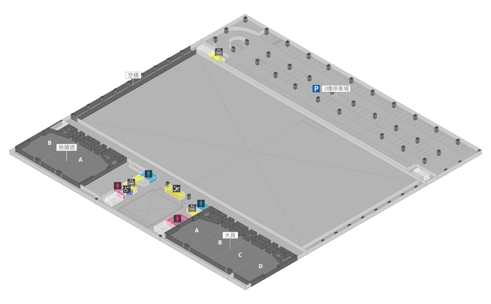

09:00–10:20
Art and Practice of Future-Proof Endodontics. Part 1: Diagnosis and Outcomes
SDr. Ove Peters
M謝松志 醫師
第18屆第二次會員大會暨第136次學術研討會

SDr. Ove Peters
M謝松志 醫師
SDr. Ove Peters
M林郁恆 醫師
SDr. Ove Peters
M何怡青 醫師
SDr. Atsushi Tomokiyo
M蔡宜玲 醫師
SDr. Atsushi Tomokiyo
M林芯宇 醫師
SDr. Atsushi Tomokiyo
M王馨慧 醫師
SDr. Atsushi Tomokiyo
M左凱勻 醫師
M李苑玲 醫師
此日期與會議廳沒有演講摘要。
Dr. Ove Peters, PhD
Professor of Endodontics and Head of Clinical Dentistry, University of Queensland, Brisbane, Australia
This talk consists of 5 connected 1 hour-long segments and is collectively designed to translate science into clinical judgment as it related to endodontics. Vital pulp therapy is revisited as a biologically sound, outcome-driven treatment strategy, including its clinical indications, prognostic determinants and economic implications. Instrumentation and obturation are discussed as interdependent pillars of treatment, with emphasis on error avoidance, apical control and the limits of radiographic surrogates for healing.
Endodontic-restorative integration is explored as a decisive factor for long-term success, with clinical outcomes ranked according to restorability, structural integrity and functional demands. The lecture series concludes with an evidence-based appraisal of digital endodontics, distinguishing meaningful diagnostic and workflow advances from technological overreach. Taken together the keynote emphasizes that future-proof endodontics lies not in adopting more technology, but in refining clinical judgment under uncertainty.
The Evolution of Regenerative Endodontic Procedure
林佩玉(Lin PY) DDS
嘉義基督教醫院主治醫師 中華民國牙髓病學會理事暨雜誌編輯 衛福部部定牙髓病科專科醫師
根尖未閉合的未成熟恆牙發生齒髓壞死時，其根管治療會面臨棘手的臨床挑戰，傳統方式是採取根尖成形術後再完成根管充填，但停止發育的脆弱牙根結構將迎來斷裂的高風險甚至縮短牙齒壽命。
牙髓再生術的概念最早可溯及1971年的研究，直到21世紀初期開始應用於臨床治療，不僅能杜絕根管內感染以利根尖周圍組織癒合也能促進牙根繼續發育，增加牙根長度及厚度，改善預後。隨著愈來愈多相關研究及臨床實證支持，牙髓再生術式漸趨成熟，目前已是未成熟恆牙齒髓壞死時的可靠及首要治療選項。
本次演講將回顧牙髓再生術的發展脈絡，分享目前臨床治療步驟準則及操作考量，並介紹未來展望及其他可能應用。
A Silent Killer：How to Diagnose and Treat Root Resorption
陳捷茹(Chen CJ) DDS
高雄醫學大學附設中和紀念醫院主治醫師 高雄岡山醫院主治醫師 中華民國牙髓病學會副秘書長暨出版委員
牙根吸收是沈默的殺手，經常在不知不覺間造成牙根的嚴重破壞，其臨床上的診斷與治療也面臨重重困難。本次課程將帶領大家了解牙根吸收的分類和機轉，利用錐狀束電腦斷層（CBCT）以獲得更精準的診斷與牙根吸收狀況，並透過臨床案例，剖析造成牙根吸收的可能風險因子，進而探討預防及治療的方式。
Restoration Strategies for Endodontically Treated Teeth
姜昱至(Chiang YC) DDS, PhD
國立台灣大學附設醫院牙體復形美容牙科主任 國立台灣大學牙醫學系教授 曾任國立台灣大學分子醫學影像中心主任 曾任中華民國牙體復形學會理事長
Endodontically treated teeth often present unique restorative challenges due to the loss of tooth structure, altered biomechanics, and increased susceptibility to fracture. Proper restorative planning before and during root canal therapy is therefore essential to ensure long-term function and survival.
Emphasis will be placed on the importance of achieving adequate access and restorative design to improve fracture resistance. The indications, advantages, and limitations of different post systems, such as fiber posts and cast metal posts, will also be discussed. In addition, factors influencing the selection of final restorations, including full crowns, onlays, and adhesive restorations, will be evaluated based on current evidence and clinical guidelines.
Through a review of contemporary studies and clinical examples, this lecture aims to provide a practical framework for treatment planning and restorative decision-making for endodontically treated teeth. Understanding these restorative principles can help clinicians optimize biomechanical stability, enhance prognosis, and improve long-term clinical outcomes.
The ABCs and Beyond： Minimally Invasive Endodontics
紀智文(Chi CW) DDS, PhD
國立台灣大學附設醫院主治醫師 國立台灣大學牙醫學系助理教授 曾任臺大醫院新竹分院牙科部副主任
微創牙髓病治療的概念，在保守與效率中取得一個平衡。一個新的治療概念，是眾多理念、技術、與材料的集大成。除了對根管型態發育以及系統知識的掌握，運用牙科手術型顯微鏡的輔助，提升根管治療的視野與能見度，並導入智慧型根管修形系統與高穩定度的根管長度測量儀器，可以讓醫師有效掌握根管的長度以及良好的根管修形效果，搭配安全與有效的根管沖洗概念，進而達到根管內的徹底清潔，最後採用三維緻密根管技術已完成根管內部開口的完美充填，將大幅增加根管治療的成功率。
The concept of Minimally Invasive Endodontics (MIE) seeks a critical balance between tooth structure conservation and clinical efficiency. This modern therapeutic approach represents a synthesis of advanced philosophies, techniques, and materials. Beyond mastering root canal morphology and systematic knowledge, the application of Dental Operating Microscopes (DOM) significantly enhances visibility and precision during treatment. The integration of intelligent root canal shaping systems and high-stability electronic apex locators allows clinicians to accurately control working length and achieve superior canal instrumentation. Combined with safe and effective irrigation protocols, thorough intracanal disinfection can be attained. Finally, the use of three-dimensional (3D) dense obturation techniques to achieve a hermetic seal of the root canal system substantially increases the overall success rate of endodontic treatment.
The Art of Cleaning in MIE：Strategies for Ultrasonic Irrigation in Narrow Canals
陳昱仰(Chen YY) DDS, MS
白石、怡登、琇品牙醫診所主治醫師 衛福部部定牙髓病科專科醫師
將感染從錯綜複雜的根管解剖結構中徹底去除，始終是根管醫師努力追求的目標，卻也是臨床實踐中最具挑戰性的課題。微創根管治療（Minimally Invasive Endodontics, MIE）在保留齒質結構的同時，也對根管沖洗造成了極大的物理挑戰。
超音波沖洗是目前臨床醫師最常使用的清潔方式之一，但隨著根管錐度與直徑的縮減，沖洗液在狹窄空間中的流動受到限制，導致根尖區的沖洗效果下降。本次演講將從流體動力學的角度進行深度解析，探討超音波沖洗在受限空間中的運作原理，分析其聲流效應（Acoustic streaming）與穴蝕效應（Cavitation）的優勢與侷限，並與其他沖洗技術進行對比。期望能協助與會者在最大程度保留齒質的同時，最佳化根管沖洗效率，在保留齒質結構強度與加強根管沖洗效果的目標之間，尋求最精準的臨床平衡。
Evolution of Root Canal Obturation： From Lateral Condensation to Calcium Silicate-Based Sealers
王正潔(Wang CC) DDS
台北醫學大學附設醫院主治醫師 中華民國牙髓病學會雜誌審查委員 衛福部部定牙髓病科專科醫師
根管充填是根管治療成功的重要環節，其主要目的在於封閉根管系統、預防微生物再感染，並促進根尖周圍組織的癒合。過去數十年間，根管充填技術歷經多次演進。傳統的側方加壓充填（lateral condensation）因其操作可預測性與良好的長期臨床成功率，長期被視為標準技術；其後發展的熱垂直加壓充填（warm vertical compaction）則透過加熱牙膠，使材料能更佳地適應複雜的根管系統，提升三維充填的完整性。
近年來，隨著材料科學的進步，矽酸鈣基底封填材料（calcium silicate-based sealers）的出現，逐漸改變根管充填的理念。此類材料具有良好的生物相容性與生物活性，能與牙本質形成礦化界面層（mineralized interfacial layer），並促進羥磷灰石沉積，使以封填劑（sealer）為主導的水合式充填（hydraulic condensation）充填概念逐漸受到重視。
本演講將回顧根管充填技術，自傳統側方加壓與熱垂直加壓充填，到近年矽酸鈣基底封填材料應用的發展歷程，並探討不同技術與材料的臨床優缺點及相關科學證據，進一步討論現代根管治療中根管充填觀念的轉變，以及未來可能的發展方向。
Dr. Atsushi Tomokiyo, PhD
Professor, Graduate School of Dental Medicine, Department of Restorative Dentistry, Hokkaido University, Japan
Dental pulp tissue develops pulpitis when it becomes infected by bacteria. Pulpitis progresses from reversible to irreversible stages, and pulp affected by irreversible pulpitis must be removed. In the past, the entire pulp was removed once irreversible pulpitis was diagnosed. However, it has become clear that pulpitis is located to the site of bacterial invasion, and that uninfected areas of the pulp remain healthy. Furthermore, it has been reported that non-vital teeth have a significantly lower survival rate than vital teeth. Therefore, the importance of vital pulp therapy (VPT), which aims to preserve as much dental pulp as possible, is increasing.
In VPT, a pulp-capping material is placed on the dentin adjacent to the pulp or on the exposed pulp after removing caries and infected tissue. As a result, the pulp is protected by the formation of a reparative dentin or a dentin bridge beneath the pulp capping material. However, no established method exists to reliably distinguish between carious and healthy tooth structure, or between infected and healthy pulp. Although various materials have been used in VPT, the dentin induced by these materials often differs from primary dentin in both structure and function. Based on this background, this presentation will describe current VPT practices, discuss the problems associated with VPT, and highlight key considerations when performing the procedure. In addition, we will introduce our efforts to induce dentin formation that more closely resembles primary dentin after VPT, as well as our attempts to identify caries-related bacteria using photonics.
Pulp extirpation is performed when a large portion of the dental pulp is affected by irreversible pulpitis. During pulp extirpation, the goal is to remove bacteria along with the pulp, and both root canal preparation and irrigation are essential for achieving this. In root canal preparation, it is necessary not only to remove the dental pulp and bacteria (cleaning) but also to create an appropriate angle (taper) that allows for effective root canal irrigation (shaping). Because the ISO standard specifies a 2% taper for stainless steel files, creating a sufficient taper is time-consuming, and it is difficult to confirm whether the taper has been adequately achieved. In contrast, nickel-titanium files have a large taper, enabling sufficient sharpening once they reach the working length. In this lecture, after explaining the characteristics of nickel-titanium files, we will describe a root canal shaping method using the Hyflex EDM OGSF sequence.
李宜恭(Lee YK) MD, MS
大林慈濟醫院急診部主任 大林慈濟醫院教學部主任 慈濟大學兼任副教授
本課程聚焦於「學習歷程數據」如何轉化為提升醫學教育品質的核心動力。隨著數位學習平台、臨床評量工具與電子學習歷程檔案的普及，醫學教育已從傳統經驗導向，逐步邁向以數據支持決策的模式。本課程將系統性介紹學習歷程數據的來源、蒐集與治理方式，並結合學習分析方法，協助教育者理解學生的能力發展軌跡與學習行為。
在應用層面，課程強調如何透過數據視覺化與學習儀表板，提升教學決策的即時性與精準度，並進一步運用於能力本位醫學教育（CBME）、個別化學習設計及臨床教學回饋。學員將學習如何建立早期預警機制、優化評量系統，以及設計以證據為基礎的課程改進策略。
How to Submit to the Journal of Endodontic Science (JES) and Common Submission Errors
張耀仁(Chang YJ) DDS, MS
台大醫院口腔醫學部兼任主治醫師 如意牙醫診所主治醫師 台大醫院口腔醫學部牙髓病受訓醫師 新光吳火獅紀念醫院住院醫師
「牙髓病科學雜誌（Journal of Endodontic Science, JES）」刊載基礎牙髓病學或臨床牙髓病學有關之著作，專注於牙髓病學研究、臨床病例報告、技術分享及病例追蹤，是台灣牙髓病醫師發表學術論文的重要平台。於2026年1月1日起，JES正式通過醫策會「教學醫院評鑑學術性期刊認定標準」，為更符合認定原則，本次將簡介投稿JES流程，以及往年作者投稿時常見的格式錯誤並加以說明。
Overview of the Endodontic Specialty Board Examination： Structure, Process, and Key Regulations
楊正媺(Yang CM) DDS
高雄榮民總醫院口腔醫學部主治醫師
本演講旨在闡述中華民國牙髓病學會專科醫師甄審制度之架構與評量原則，重點涵蓋報考資格、必要文件與口試病例紀錄審查標準，以及由報名、筆試至口試審查之完整甄審流程。筆試著重基礎知識與臨床應用能力，口試則以病例導向評估臨床思維與決策合理性。另將整理常見退件原因與審查缺失，以釐清制度重點，期能協助受訓醫師正確認知甄審機制，並提升臨床訓練與紀錄品質之符合度。
← 左右滑動查看完整場地圖 →

2026年8月15日 18:30–21:00
奇美博物館